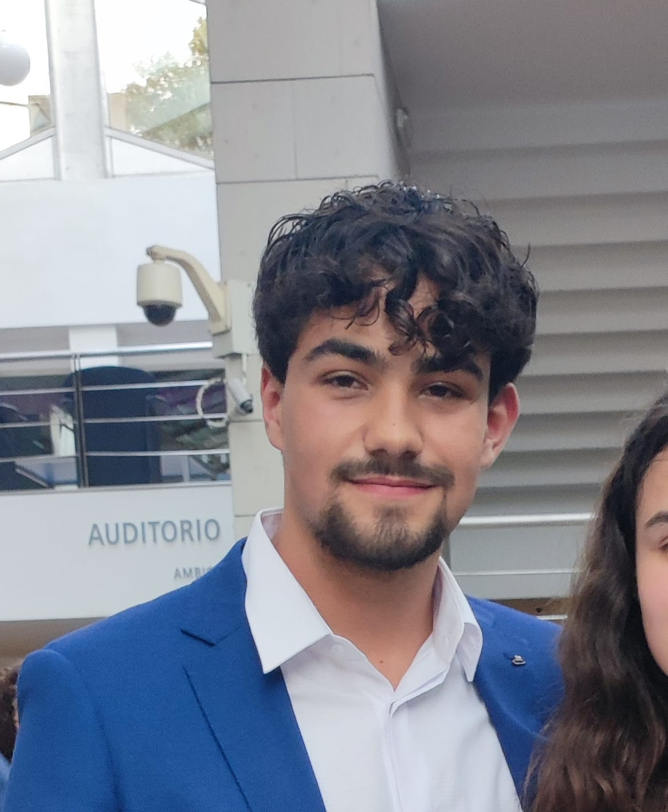
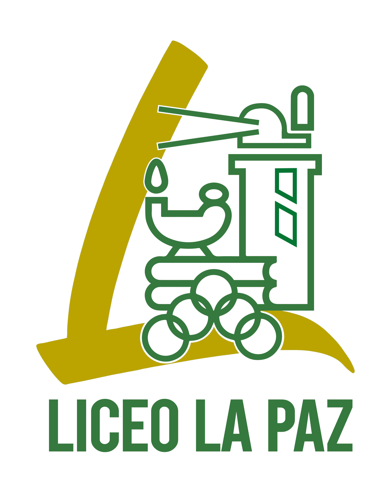

App de Gestión de Tareas (Android)
Aplicación móvil desarrollada en Kotlin y Java con persistencia local mediante Room / SQLite y diseño Material 3.
Ver Código en GitHub
Estudiante de 2º de DAM | Desarrollador de Aplicaciones Multiplataforma
Descargar CV
Aplicación móvil desarrollada en Kotlin y Java con persistencia local mediante Room / SQLite y diseño Material 3.
Ver Código en GitHub
Aplicación de escritorio multiplataforma desarrollada en Java con interfaz JavaFX y conexión a base de datos MySQL.
Ver Código en GitHub
Centro Educativo Liceo La Paz (A Coruña) | En curso (2º año)
Formación orientada a desarrollo de software empresarial, desarrollo para dispositivos móviles, bases de datos, sistemas de gestión (ERP como Odoo) y diseño de interfaces.
IES Elviña (A Coruña) | 2022 - 2024
Formación académica previa orientada a bases técnicas y científicas.
Escuela Oficial de Idiomas (EOI)
Nivel B1 certificado y actualmente cursando el nivel B2.
Periodo previsto: 2026 | Modalidad: Presencial / Remoto
Preparado para realizar la Formación en Centros de Trabajo (FCT) en puestos de desarrollo multiplataforma, soporte o desarrollo backend/móvil.